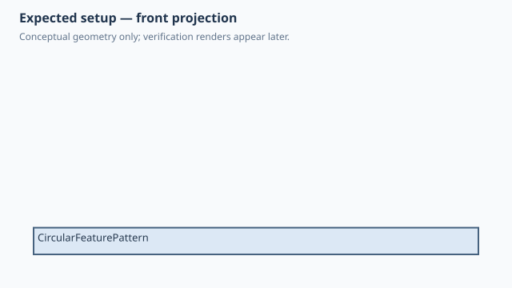

Forge model example
Native circular feature pattern
What this example makes
SolidCraft saves one plate with six through holes and one native CircularPatternFeature that references the original BoltHole cut.


Forge code
This is the complete Forge source used for this example.
"""Native SolidCraft circular feature-pattern qualification."""
class CircularFeaturePattern:
bolts = 6
pcd = 60.0
def build(self):
plate = Box(100, 100, 6, anchor=Anchor.BOTTOM)
with Sketch(name="BoltHole", on=plate, parent=Anchor.TOP) as bolt:
bolt.add(
Circle2D(d=8),
offset=(self.pcd / 2, 0),
)
source_cut = bolt.extrude(Depth.THROUGH_ALL)
plate = plate - source_cut
return plate.circular_pattern(
source_cut,
count=self.bolts,
axis=Axis.Z,
)
CircularFeaturePattern()
API used
source = bolt.extrude(Depth.THROUGH_ALL); body = body - source; body.circular_pattern(source, count=bolts, axis=Axis.Z)
Reference code
The same model is written independently with the reference libraries below. This makes it easier to compare modelling style and the resulting shape.
PythonSCAD
"""PythonSCAD reference for a six-hole circular feature pattern."""
from math import cos, pi, sin
from pythonscad import *
plate = cube([100, 100, 6], center=True).up(3)
cutters = None
for index in range(6):
angle = index * 2 * pi / 6
x = 30 * cos(angle)
y = 30 * sin(angle)
hole = cylinder(d=8, h=12, center=True).translate([x, y, 3])
cutters = hole if cutters is None else cutters | hole
model = plate - cutters

Reference result checks · PASS · 4/4 passed
| Check | Status | Expected | Measured | Detail |
|---|---|---|---|---|
| bounds | PASS | {'min': [-50.0, -50.0, 0.0], 'max': [50.0, 50.0, 6.0]} | {'min': [-50.0, -50.0, 0.0], 'max': [50.0, 50.0, 6.0]} | max difference 0.0 mm; allowed 0.5 mm |
| watertight | PASS | True | True | closed mesh |
| volume | PASS | 58190.44263153228 mm³ | 58260.07644386813 mm³ | difference 69.63381233585096 mm³; allowed 80.0 mm³ |
| surface distance probes | PASS | 18 surface measurements | 18/18 within tolerance | largest difference 0.116233 mm |
pyBOSL2
"""pyBOSL2 reference for a six-hole circular feature pattern."""
from math import cos, pi, sin
from pybosl2 import cuboid, cyl
plate = cuboid([100, 100, 6]).up(3)
cutters = None
for index in range(6):
angle = index * 2 * pi / 6
x = 30 * cos(angle)
y = 30 * sin(angle)
hole = cyl(diameter=8, height=12).translate([x, y, 3])
cutters = hole if cutters is None else cutters | hole
model = plate - cutters

Reference result checks · PASS · 4/4 passed
| Check | Status | Expected | Measured | Detail |
|---|---|---|---|---|
| bounds | PASS | {'min': [-50.0, -50.0, 0.0], 'max': [50.0, 50.0, 6.0]} | {'min': [-50.0, -50.0, 0.0], 'max': [50.0, 50.0, 6.0]} | max difference 0.0 mm; allowed 0.5 mm |
| watertight | PASS | True | True | closed mesh |
| volume | PASS | 58190.44263153228 mm³ | 58260.07648625766 mm³ | difference 69.63385472538357 mm³; allowed 80.0 mm³ |
| surface distance probes | PASS | 18 surface measurements | 18/18 within tolerance | largest difference 0.116234 mm |
CadQuery
"""CadQuery reference for a six-hole circular feature pattern."""
from math import cos, pi, sin
import cadquery as cq
points = [
(30 * cos(index * 2 * pi / 6), 30 * sin(index * 2 * pi / 6))
for index in range(6)
]
result = (
cq.Workplane("XY")
.box(100, 100, 6, centered=(True, True, False))
.faces(">Z")
.workplane()
.pushPoints(points)
.circle(4)
.cutThruAll()
)
model = cq.Assembly()
model.add(result, name="circular_feature_pattern")

Reference result checks · PASS · 4/4 passed
| Check | Status | Expected | Measured | Detail |
|---|---|---|---|---|
| bounds | PASS | {'min': [-50.0, -50.0, 0.0], 'max': [50.0, 50.0, 6.0]} | {'min': [-50.0, -50.0, 0.0], 'max': [50.0, 50.0, 6.0]} | max difference 0.0 mm; allowed 0.5 mm |
| watertight | PASS | True | True | closed mesh |
| volume | PASS | 58190.44263153228 mm³ | 58191.192471469556 mm³ | difference 0.7498399372780113 mm³; allowed 80.0 mm³ |
| surface distance probes | PASS | 18 surface measurements | 18/18 within tolerance | largest difference 0.00124453 mm |
build123d
"""build123d reference for a six-hole circular feature pattern."""
from math import cos, pi, sin
from build123d import (
Align,
Axis,
Box,
BuildPart,
BuildSketch,
Circle,
Locations,
Mode,
extrude,
)
bottom = (Align.CENTER, Align.CENTER, Align.MIN)
points = [
(30 * cos(index * 2 * pi / 6), 30 * sin(index * 2 * pi / 6))
for index in range(6)
]
with BuildPart() as model:
Box(100, 100, 6, align=bottom)
with BuildSketch(model.faces().sort_by(Axis.Z)[-1]):
with Locations(*points):
Circle(4)
extrude(amount=-6, mode=Mode.SUBTRACT)

Reference result checks · PASS · 4/4 passed
| Check | Status | Expected | Measured | Detail |
|---|---|---|---|---|
| bounds | PASS | {'min': [-50.0, -50.0, 0.0], 'max': [50.0, 50.0, 6.0]} | {'min': [-50.0, -50.0, 0.0], 'max': [50.0, 50.0, 6.0]} | max difference 0.0 mm; allowed 0.5 mm |
| watertight | PASS | True | True | closed mesh |
| volume | PASS | 58190.44263153228 mm³ | 58191.192471469556 mm³ | difference 0.7498399372780113 mm³; allowed 80.0 mm³ |
| surface distance probes | PASS | 18 surface measurements | 18/18 within tolerance | largest difference 0.00124453 mm |
How Forge builds it in SolidCraft
Forge emits the source Sketch/cut once, then exactly one solid.pattern.circular with features=['BoltHole']; bolts is a dimensionless native count parameter and pcd remains a millimetre parameter used by the source profile position.
Show generated SolidCraft commands
parameters.add
parameters.add
solid.box
model.faces
sketch.create
sketch.circle.center
sketch.finish
solid.extrude
solid.pattern.circularSolidCraft result
Built and measured with SolidCraft 0.42.0. Open the measurement details to inspect body sizes and editable parameters.
bolts 4 · 1 bodies
Editable parameters
| Name | Value |
|---|---|
pcd | 60.0 |
bolts | 4.0 |
Body size
| Body | Minimum | Maximum |
|---|---|---|
| CircularFeaturePattern | [-50, -50, -2.76988e-32] | [50, 50, 6] |
Original model · 1 bodies
Editable parameters
| Name | Value |
|---|---|
pcd | 60.0 |
bolts | 6.0 |
Body size
| Body | Minimum | Maximum |
|---|---|---|
| CircularFeaturePattern | [-50, -50, -2.76988e-32] | [50, 50, 6] |
Semantic validation · PASS · 10/10 checks passed
| Status | Level | Check | Expected | Actual |
|---|---|---|---|---|
| PASS | Q4 | declared target geometry | [{"label": "CircularFeaturePattern", "min": [-50, -50, 0], "max": [50, 50, 6]}] | [{"min": [-50.0, -50.0, -2.7698767739501816e-32], "max": [50.0, 50.0, 6.000000000000001]}] |
| PASS | Q4 | single circular-patterned plate body | 1 | 1 |
| PASS | Q4 | baseline pattern parameters | {"bolts": 6.0, "pcd": 60.0} | {"pcd": 60.0, "bolts": 6.0} |
| PASS | Q4 | six Ø8 through holes have qualified native geometry | {"volume_mm3": 58190.44263153228, "cylindrical_faces": 6} | {"volume_mm3": 58190.44263118612, "cylindrical_faces": 6} |
| PASS | Q4 | source BoltHole stays one solved circle profile | {"name": "BoltHole", "curves": 1, "profiles": 1, "status": "solved"} | {"curves": 1, "dof": 1, "id": 2, "name": "BoltHole", "profiles": 1, "status": "solved", "visible": false} |
| PASS | Q4 | source cut stays single and pattern is one native History feature | [["BoxFeature", "Box1"], ["Sketch", "BoltHole"], ["ExtrudeFeature", "BoltHole"], ["CircularPatternFeature", "CircularPattern1"]] | [["BoxFeature", "Box1"], ["Sketch", "BoltHole"], ["ExtrudeFeature", "BoltHole"], ["CircularPatternFeature", "CircularPattern1"]] |
| PASS | Q5 | saved bolt count changed | {"bolts": 4.0, "pcd": 60.0} | {"pcd": 60.0, "bolts": 4.0} |
| PASS | Q5 | mutated pattern remains one body | 1 | 1 |
| PASS | Q5 | saved pattern rebuilds to four holes | {"volume_mm3": 58793.628421021516, "cylindrical_faces": 4} | {"volume_mm3": 58793.62842106025, "cylindrical_faces": 4} |
| PASS | Q5 | mutation keeps one source cut and one circular pattern feature | [["BoxFeature", "Box1"], ["Sketch", "BoltHole"], ["ExtrudeFeature", "BoltHole"], ["CircularPatternFeature", "CircularPattern1"]] | [["BoxFeature", "Box1"], ["Sketch", "BoltHole"], ["ExtrudeFeature", "BoltHole"], ["CircularPatternFeature", "CircularPattern1"]] |
Visual result
Actual is the SolidCraft render. Goal shows the expected shape. Overlay places both on top of each other so differences are easy to see.
Top

Current SolidCraft top view

Expected geometry in the same top view

Expected geometry over the actual top view
Front

Current SolidCraft front view

Expected geometry in the same front view

Expected geometry over the actual front view
Iso
Current SolidCraft iso view

Expected geometry in the same iso view

Expected geometry over the actual iso view
Show extra saved-render views
Right

Current SolidCraft right view

Expected geometry in the same right view

Expected geometry over the actual right view
Technical test details
Q1 and Q2 tests
These are the exact automated tests used for this example.
- Q1 PASS
- Q2 PASS
Geometry checks
These are the sizes and measurement points used by the automated checks.
| Body | Minimum | Maximum |
|---|---|---|
| CircularFeaturePattern | [-50, -50, 0] | [50, 50, 6] |
- Is the size check enough for this model? No — The six bolt holes do not change the plate envelope. Volume, cylindrical-wall probes and native pattern-history checks are required.
- Views checked: top, front, iso
- Internal features checked: 6
- Expected volume: 58190.44263153228 mm³ (±80.0 mm³)
- Closed solid expected: True
- Surface points checked: 18
Show all geometry check points
Internal features
- hole 1: centre
[30.0, 0.0], diameter 8.0 mm, Z[0.0, 6.0] - hole 2: centre
[15.000000000000004, 25.980762113533157], diameter 8.0 mm, Z[0.0, 6.0] - hole 3: centre
[-14.999999999999993, 25.98076211353316], diameter 8.0 mm, Z[0.0, 6.0] - hole 4: centre
[-30.0, 3.67394039744206e-15], diameter 8.0 mm, Z[0.0, 6.0] - hole 5: centre
[-15.000000000000014, -25.980762113533153], diameter 8.0 mm, Z[0.0, 6.0] - hole 6: centre
[15.000000000000004, -25.980762113533157], diameter 8.0 mm, Z[0.0, 6.0]
Surface measurement points
- hole 1 at z=0.5: point
[30.0, 0.0, 0.5]→ 4.0 mm (±0.3 mm) - hole 1 at z=3: point
[30.0, 0.0, 3.0]→ 4.0 mm (±0.3 mm) - hole 1 at z=5.5: point
[30.0, 0.0, 5.5]→ 4.0 mm (±0.3 mm) - hole 2 at z=0.5: point
[15.000000000000004, 25.980762113533157, 0.5]→ 4.0 mm (±0.3 mm) - hole 2 at z=3: point
[15.000000000000004, 25.980762113533157, 3.0]→ 4.0 mm (±0.3 mm) - hole 2 at z=5.5: point
[15.000000000000004, 25.980762113533157, 5.5]→ 4.0 mm (±0.3 mm) - hole 3 at z=0.5: point
[-14.999999999999993, 25.98076211353316, 0.5]→ 4.0 mm (±0.3 mm) - hole 3 at z=3: point
[-14.999999999999993, 25.98076211353316, 3.0]→ 4.0 mm (±0.3 mm) - hole 3 at z=5.5: point
[-14.999999999999993, 25.98076211353316, 5.5]→ 4.0 mm (±0.3 mm) - hole 4 at z=0.5: point
[-30.0, 3.67394039744206e-15, 0.5]→ 4.0 mm (±0.3 mm) - hole 4 at z=3: point
[-30.0, 3.67394039744206e-15, 3.0]→ 4.0 mm (±0.3 mm) - hole 4 at z=5.5: point
[-30.0, 3.67394039744206e-15, 5.5]→ 4.0 mm (±0.3 mm) - hole 5 at z=0.5: point
[-15.000000000000014, -25.980762113533153, 0.5]→ 4.0 mm (±0.3 mm) - hole 5 at z=3: point
[-15.000000000000014, -25.980762113533153, 3.0]→ 4.0 mm (±0.3 mm) - hole 5 at z=5.5: point
[-15.000000000000014, -25.980762113533153, 5.5]→ 4.0 mm (±0.3 mm) - hole 6 at z=0.5: point
[15.000000000000004, -25.980762113533157, 0.5]→ 4.0 mm (±0.3 mm) - hole 6 at z=3: point
[15.000000000000004, -25.980762113533157, 3.0]→ 4.0 mm (±0.3 mm) - hole 6 at z=5.5: point
[15.000000000000004, -25.980762113533157, 5.5]→ 4.0 mm (±0.3 mm)
Saved-design test
Checked in the saved model. Required because bolts is a saved native pattern-count parameter. Change bolts from 6 to 4 in the saved .sc design; the pattern must rebuild to four holes without rerunning Python while retaining one source cut and one CircularPatternFeature.
Raw test files
- Forge fixture source
- PythonSCAD reference source
- pyBOSL2 reference source
- CadQuery reference source
- build123d reference source
- Generated command JSON in build output
- results.json
- measurements-bolts-4.json
- measurements.json
- joint-inspect.json
- model-bolts-4.sc
- model.sc
- model.step
- qualification-result.json
- validation.json
- visual-validation.json
- camera-front.json
- camera-iso.json
- camera-right.json
- camera-top.json
- q1-case-evidence.txt
- q2-case-evidence.txt
- Native snapshot: model.png
- Native snapshot: model-top.png
- Native snapshot: goal-top.png
- Native snapshot: overlay-top.png
- Native snapshot: model-front.png
- Native snapshot: goal-front.png
- Native snapshot: overlay-front.png
- Native snapshot: visual-diff-front.png
- Native snapshot: model-right.png
- Native snapshot: goal-right.png
- Native snapshot: overlay-right.png
- Native snapshot: visual-diff-right.png
- Native snapshot: model-iso.png
- Native snapshot: goal-iso.png
- Native snapshot: overlay-iso.png
- Native snapshot: visual-diff-iso.png
- Reference evidence: reference-pythonscad/result.json
- Reference evidence: reference-pythonscad/model.stl
- Reference evidence: reference-pythonscad/model-front.png
- Reference evidence: reference-pythonscad/model-right.png
- Reference evidence: reference-pythonscad/model-iso.png
- Reference evidence: reference-pybosl2/result.json
- Reference evidence: reference-pybosl2/model.stl
- Reference evidence: reference-pybosl2/model-front.png
- Reference evidence: reference-pybosl2/model-right.png
- Reference evidence: reference-pybosl2/model-iso.png
- Reference evidence: reference-cadquery/result.json
- Reference evidence: reference-cadquery/model.stl
- Reference evidence: reference-cadquery/model-front.png
- Reference evidence: reference-cadquery/model-right.png
- Reference evidence: reference-cadquery/model-iso.png
- Reference evidence: reference-build123d/result.json
- Reference evidence: reference-build123d/model.stl
- Reference evidence: reference-build123d/model-front.png
- Reference evidence: reference-build123d/model-right.png
- Reference evidence: reference-build123d/model-iso.png


Reference documentation
- SolidCraft: Native Q2-Q5 prove one saved CircularPatternFeature and count mutation. The four comparison libraries independently prove the baseline six-hole geometry.